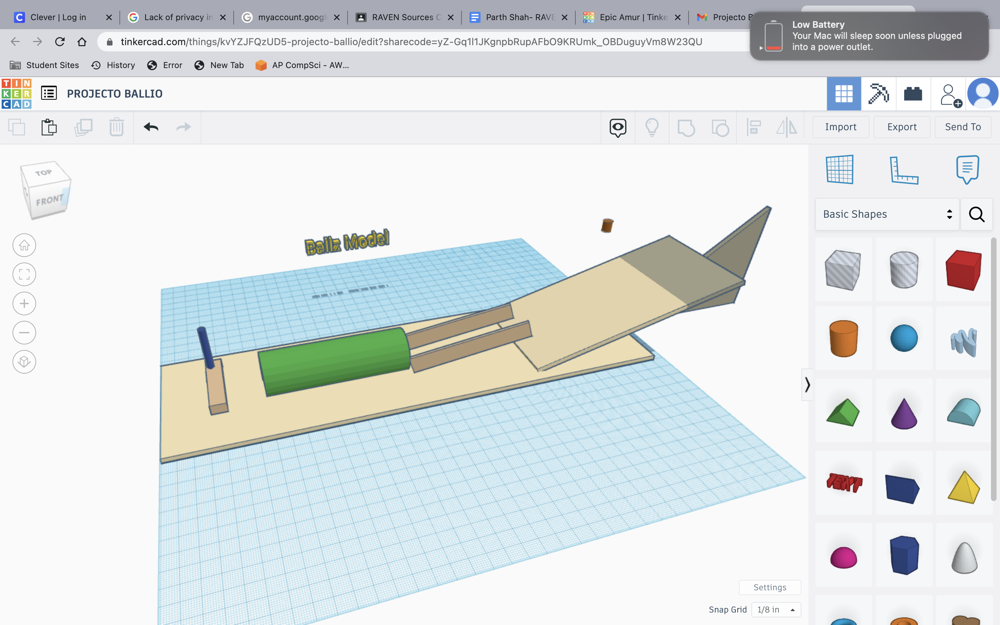
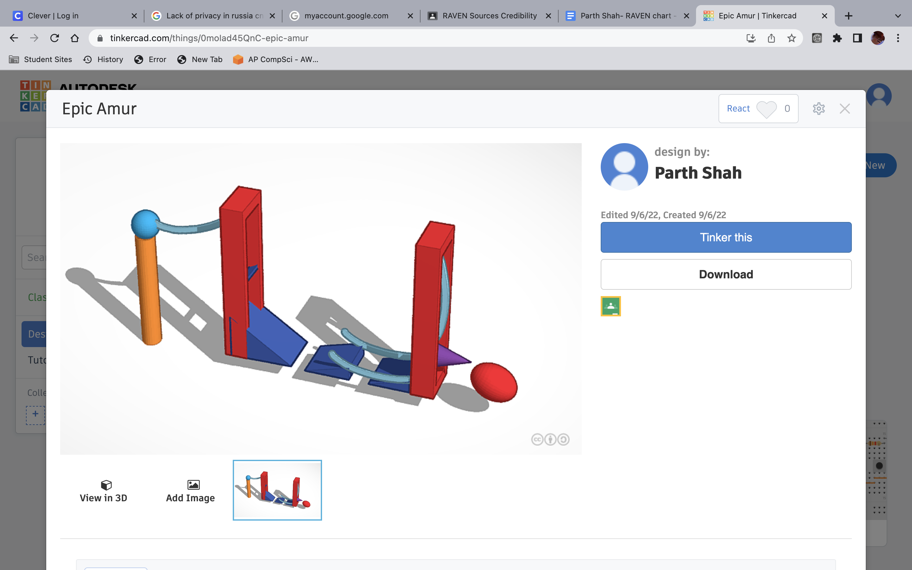
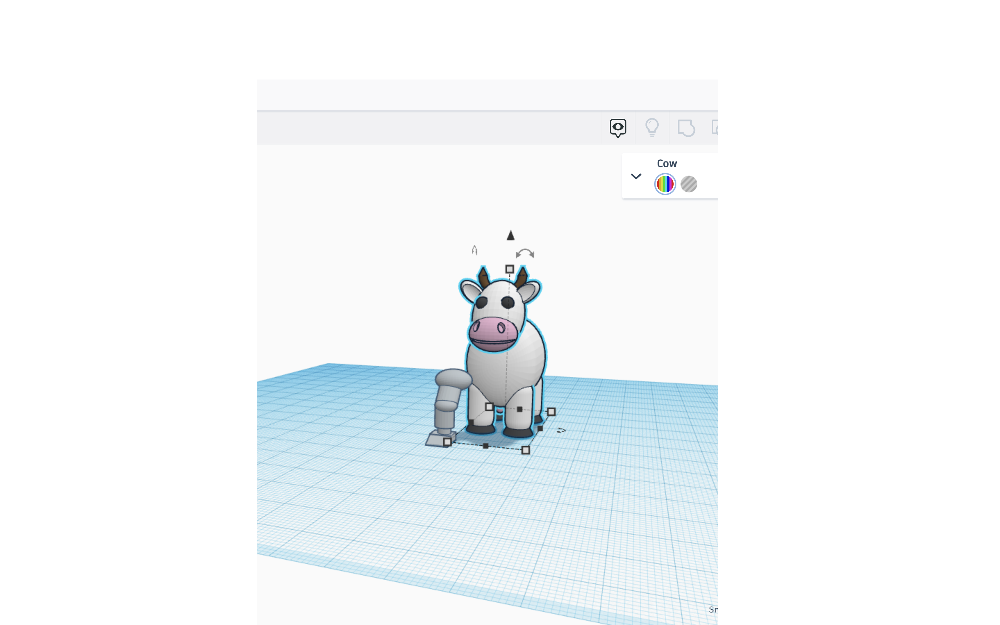
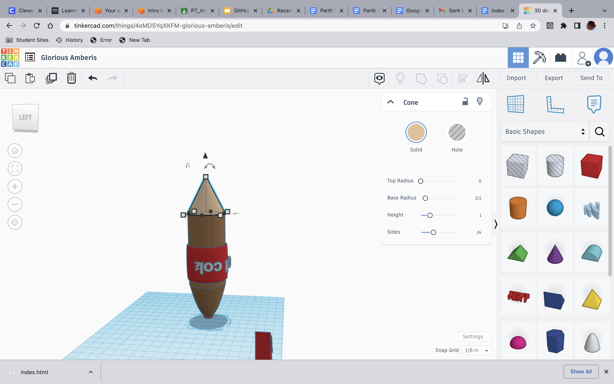

9/25/22 This week we finished our Rube Goldberg Machines Projects made out of cardboard. My teams machine popped the ballon on the first try. Our Challenge this week was to ghet a total number of all the urinals and toilets in the school... T_T
 9/30/22 This week we had no challenge because Mr.Poole was sick ;( Our assignment was to make an animal prosthetic in Tinkercad and I made a leg prosthetic for a cow.
10/7/22 This week we dissected a computer, my partner was Alex and basically we both had already built our own pcs so seeing the parts such as the GPU, CPU, and other parts wasn't too suprising. However, we both learned about the different parts of a computer different from a PC.

10/14/22 This week we wer put into teams, my teammates were Elias and Rafael we made a model rocket ship in Tinkercad made up of a 2L Coke bottle. Our challenge this week was to use a sheet of paper and get closest to a an area in the quad. Everybody made paper airplanes, while Mr.Poole made a crumpled ball. Think smarter nor harder.
